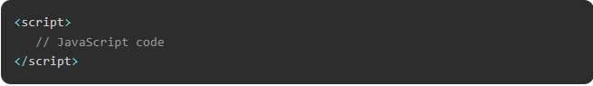

JAVASCRIPTS LÀ GÌ

Vị trí JavaScript trong tệp HTML
Có sự linh hoạt để đặt mã JavaScript ở bất kỳ đâu trong tài liệu HTML. Tuy nhiên, các cách ưa thích nhất để đưa JavaScript vào tệp HTML như sau:
Kịch bản trong <đầu>... </đầu> phần.
Kịch bản trong <thân bài>... </phần thân>.
Kịch bản trong <thân bài>... </cơ thể> và <đầu>... </đầu> phần.
Tập lệnh trong một tệp bên ngoài và sau đó đưa vào <đầu>... </đầu> phần.
Bạn có thể làm theo cú pháp bên dưới để thêm mã JavaScript bằng thẻ tập lệnh.

Trong phần sau, chúng ta sẽ xem cách chúng ta có thể đặt JavaScript trong tệp HTML theo nhiều cách khác nhau.
JavaScript trong <đầu>... phần
Nếu bạn muốn một tập lệnh chạy trên một sự kiện nào đó, chẳng hạn như khi người dùng nhấp vào một nơi nào đó, thì bạn sẽ đặt tập lệnh đó vào phần đầu như sau -